In theory, Attention is All You Need. In practice, however, we also need optimized attention implementations like FlashAttention.
Although these fused attention implementations have substantially improved performance and enabled long contexts, this efficiency has come with a loss of flexibility. You can no longer try out a new attention variant by writing a few PyTorch operators – you often need to write a new custom kernel! This operates as a sort of “software lottery” for ML researchers – if your attention variant doesn’t fit into one of the existing optimized kernels, you’re doomed to slow runtime and CUDA OOMs.
For some examples of attention variants, we have Causal, Relative Positional Embeddings, Alibi, Sliding Window Attention, PrefixLM, Document Masking/Sample Packing/Jagged Tensors, Tanh Soft-Capping, PagedAttention, etc. Even worse, folks often want combinations of these! Sliding Window Attention + Document Masking + Causal + Context Parallelism? Or what about PagedAttention + Sliding Window + Tanh Soft-Capping?
The left picture below represents the state of the world today – some combinations of masking + biases + setting have existing kernels implemented. But the various options lead to an exponential number of settings, and so overall we end up with fairly spotty support. Even worse, new attention variants researchers come up with will have zero support.
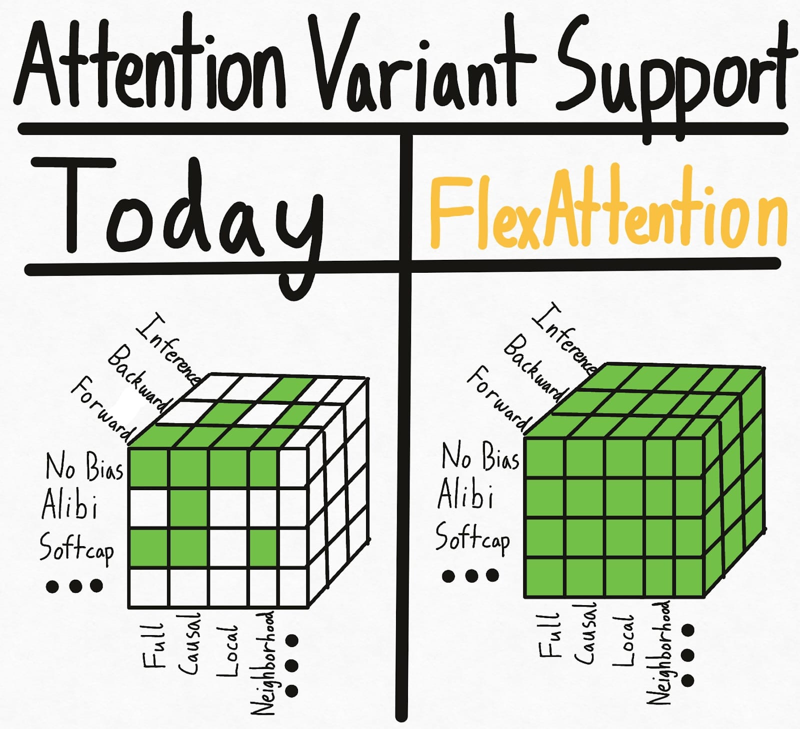
To solve this hypercube problem once and for all, we introduce FlexAttention, a new PyTorch API.
- We provide a flexible API that allows implementing many attention variants (including all the ones mentioned in the blog post so far) in a few lines of idiomatic PyTorch code.
- We lower this into a fused FlashAttention kernel
through
torch.compile, generating a FlashAttention kernel that doesn’t materialize any extra memory and has performance competitive with handwritten ones. - We also automatically generate the backwards pass, leveraging PyTorch’s autograd machinery.
- Finally, we can also take advantage of sparsity in the attention mask, resulting in significant improvements over standard attention implementations.
With FlexAttention, we hope that trying new attention variants will only be limited by your imagination.
You can find many FlexAttention examples at the Attention Gym: https://github.com/pytorch-labs/attention-gym. If you have any cool applications, feel free to submit an example!
PS: We also find this API very exciting since it leverages a lot of existing PyTorch infra in a fun way – more on that in the end.
FlexAttention
Here is the classic attention equation:
In code form:
Q, K, V: Tensor[batch_size, num_heads, sequence_length, head_dim]
score: Tensor[batch_size, num_heads, sequence_length, sequence_length] = (Q @ K) / sqrt(head_dim)
probabilities = softmax(score, dim=-1)
output: Tensor[batch_size, num_heads, sequence_length, head_dim] = probabilities @ VFlexAttention allows for an user-defined
function score_mod:
In code form:
Q, K, V: Tensor[batch_size, num_heads, sequence_length, head_dim]
score: Tensor[batch_size, num_heads, sequence_length, sequence_length] = (Q @ K) / sqrt(head_dim)
modified_scores: Tensor[batch_size, num_heads, sequence_length, sequence_length] = score_mod(score)
probabilities = softmax(modified_scores, dim=-1)
output: Tensor[batch_size, num_heads, sequence_length, head_dim] = probabilities @ VThis function allows you to modify the attention scores prior to softmax. Surprisingly, this ends up being sufficient for the vast majority of attention variants (examples below)!
Concretely, the expected signature for score_mod is
somewhat unique.
def score_mod(score: f32[], b: i32[], h: i32[], q_idx: i32[], kv_idx: i32[])
return score # noop - standard attentionIn other words, score is a scalar pytorch tensor that
represents the dot product of a query token and a key token. The rest of
the arguments tell you which dot product you’re currently
computing – b (current element in
batch), h (current head), q_idx (position in
query), kv_idx (position in key/value tensors).
To apply this function, we could implement it as
for b in range(batch_size):
for h in range(num_heads):
for q_idx in range(sequence_length):
for kv_idx in range(sequence_length):
modified_scores[b, h, q_idx, kv_idx] = score_mod(scores[b, h, q_idx, kv_idx], b, h, q_idx, kv_idx)Of course, this is not how FlexAttention is implemented under the
hood. Leveraging torch.compile, we automatically lower your
function into a single fused FlexAttention kernel – guaranteed
or your money back!
This API ends up being surprisingly expressive. Let’s look at some examples.
Score Mod Examples
Full Attention
Let’s first do “full attention”, or standard bidirectional attention.
In this case, score_mod is a no-op – it takes as input the
scores and then returns them as is..
def noop(score, b, h, q_idx, kv_idx):
return scoreAnd to use it end to end (including both forwards and backwards):
from torch.nn.attention.flex_attention import flex_attention
flex_attention(query, key, value, score_mod=noop).sum().backward()Relative Position Encodings
One common attention variant is the “relative position encoding”. Instead of encoding the absolute distance in the queries and keys, relative position encoding adjusts scores based on the “distance” between the queries and keys.
def relative_positional(score, b, h, q_idx, kv_idx):
return score + (q_idx - kv_idx)Note that unlike typical implementations, this does not need to materialize a SxS tensor. Instead, FlexAttention computes the bias values “on the fly” within the kernel, leading to significant memory and performance improvements.
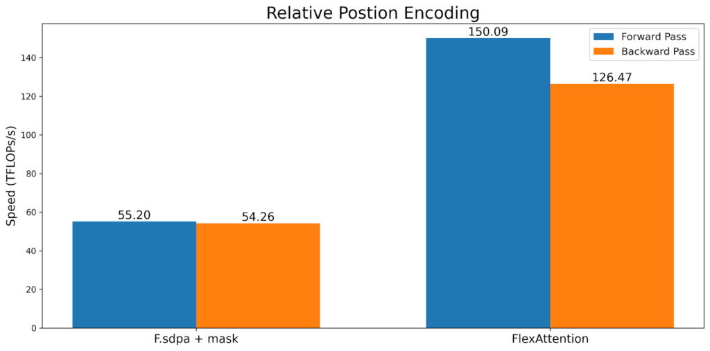
ALiBi Bias
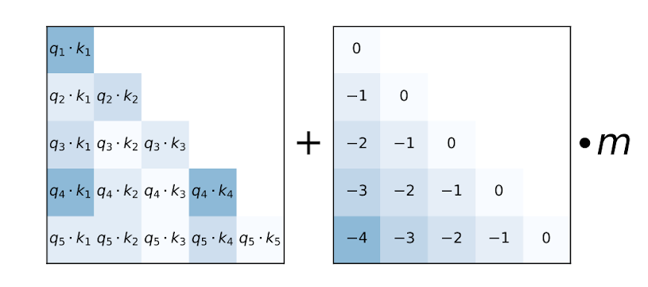
Source: Train Short, Test Long: Attention with Linear Biases Enables Input Length Extrapolation
ALiBi was introduced in Train Short, Test Long: Attention with Linear Biases Enables Input Length Extrapolation, and claims to have beneficial properties for length extrapolation at inference. Notably, MosaicML has pointed to “lack of kernel support” as the main reason why they eventually switched from ALiBi to rotary embeddings.
Alibi is similar to relative positional encodings with one exception – it has a per-head factor that is typically precomputed.
alibi_bias = generate_alibi_bias() # [num_heads]
def alibi(score, b, h, q_idx, kv_idx):
bias = alibi_bias[h] * (kv_idx - q_idx)
return score + biasThis demonstrates one interesting piece of
flexibility torch.compile provides – we can load
from alibi_bias even though it wasn’t explicitly passed
in as an input! The generated Triton kernel will calculate the
correct loads from the alibi_bias tensor and fuse it. Note
that you could regenerate alibi_bias and we still wouldn’t
need to recompile.
Soft-capping
Soft-capping is a technique used in Gemma2 and Grok-1 that prevents logits from growing excessively large. In FlexAttention, it looks like:
softcap = 20
def soft_cap(score, b, h, q_idx, kv_idx):
score = score / softcap
score = torch.tanh(score)
score = score * softcap
return scoreNote that we also automatically generate the backwards pass from the forwards pass here. Also, although this implementation is semantically correct, we likely want to use a tanh approximation in this case for performance reasons. See attention-gym for more details.
Causal Mask
Although bidirectional attention is the simplest, the
original Attention is All You Need paper and the vast majority
of LLMs use attention in a decoder-only setting where each token can
only attend to the tokens prior to it. Folks often think of this as a
lower-triangular mask, but with the score_mod API it can be
expressed as:
def causal_mask(score, b, h, q_idx, kv_idx):
return torch.where(q_idx >= kv_idx, score, -float("inf"))Basically, if the query token is “after” the key token, we keep the score. Otherwise, we mask it out by setting it to -inf, thus ensuring it won’t participate in the softmax calculation.
However, masking is special compared to other modifications – if
something is masked out, we can completely skip its computation! In this
case, a causal mask has about 50% sparsity, so not taking advantage of
the sparsity would result in a 2x slowdown. Although
this score_mod is sufficient to implement causal
masking correctly, getting the performance benefits of sparsity
requires another concept – mask_mod.
Mask Mods
To take advantage of sparsity from masking, we need to do some more
work. Specifically, by passing a mask_mod to create_block_mask, we can
create a BlockMask. FlexAttention can then
use BlockMask to take advantage of the sparsity!
The signature of mask_mod is very similar
to score_mod – just without the score. In
particular
# returns True if this position should participate in the computation
mask_mod(b, h, q_idx, kv_idx) => boolNote that score_mod is strictly more expressive
than mask_mod. However, for masking, it’s recommended to
use mask_mod and create_block_mask, as it’s
more performant. See the FAQ on
why score_mod and mask_mod are separate.
Now, let’s take a look at how we might implement causal mask
with mask_mod.
Causal Mask
from torch.nn.attention.flex_attention import create_block_mask
def causal(b, h, q_idx, kv_idx):
return q_idx >= kv_idx
# Because the sparsity pattern is independent of batch and heads, we'll set them to None (which broadcasts them)
block_mask = create_block_mask(causal, B=None, H=None, Q_LEN=1024, KV_LEN=1024)
# In this case, we don't need a score_mod, so we won't pass any in.
# However, score_mod can still be combined with block_mask if you need the additional flexibility.
flex_attention(query, key, value, block_mask=block_mask)Note that create_block_mask is a relatively
expensive operation! Although FlexAttention will not need to
recompile when it changes, if you aren’t careful about caching it, it
can lead to significant slowdowns (check out the FAQ for suggestions on
best practices).
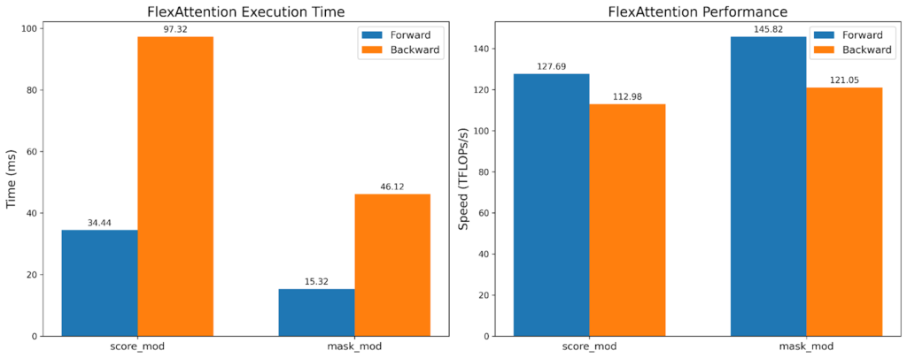
While the TFlops are roughly the same, the execution time is 2x faster for the mask_mod version! This demonstrates that we can leverage the sparsity that BlockMask provides us without losing hardware efficiency.
Sliding Window + Causal
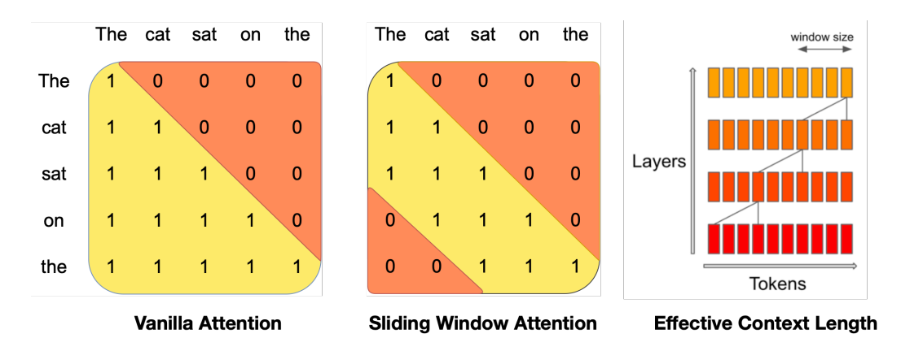
Source: Mistral 7B
Popularized by Mistral, sliding window attention (also known as local attention) takes advantage of the intuition that the most recent tokens are the most useful. In particular, it allows the query token to only attend to, say, the 1024 most recent tokens. This is often used together with causal attention.
SLIDING_WINDOW = 1024
def sliding_window_causal(b, h, q_idx, kv_idx):
causal_mask = q_idx >= kv_idx
window_mask = q_idx - kv_idx <= SLIDING_WINDOW
return causal_mask & window_mask
# If you want to be cute...
from torch.nn.attention import and_masks
def sliding_window(b, h, q_idx, kv_idx)
return q_idx - kv_idx <= SLIDING_WINDOW
sliding_window_causal = and_masks(causal_mask, sliding_window)We benchmark it
against F.scaled_dot_product_attention with a sliding
window mask as well as FA2 with a causal mask (as a reference point for
performance). Not only are we significantly faster
than F.scaled_dot_product_attention,
we’re also significantly faster than FA2 with a causal mask as
this mask has significantly more sparsity.
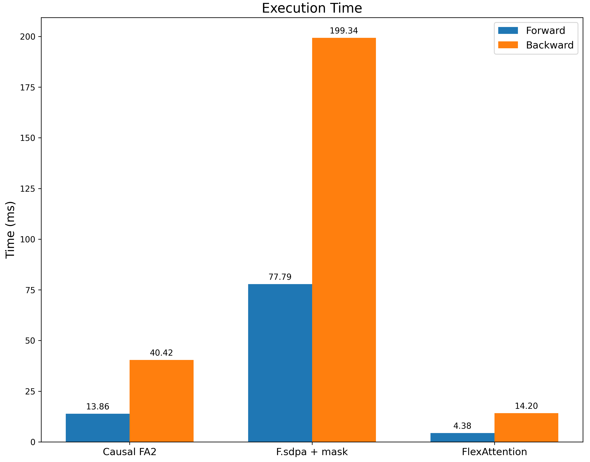
PrefixLM
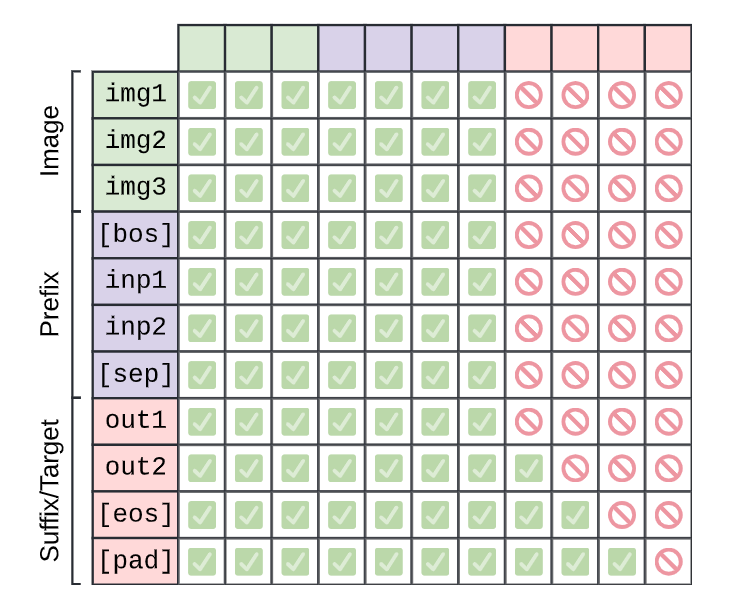
Source: PaliGemma: A versatile 3B VLM for transfer
The T5 architecture, proposed in Exploring the Limits of Transfer Learning with a Unified Text-to-Text Transformer, describes an attention variant that performs full bidirectional attention on a “prefix”, and causal attention on the rest. We again compose two mask functions to accomplish this, one for causal masking and one that is based off of the prefix length.
prefix_length: [B]
def prefix_mask(b, h, q_idx, kv_idx):
return kv_idx <= prefix_length[b]
prefix_lm_causal = or_masks(prefix_mask, causal_mask)
# In this case, our mask is different per sequence so we set B equal to our batch size
block_mask = create_block_mask(prefix_lm_causal, B=B, H=None, S, S)Just like with score_mod, mask_mod allows
us to refer to additional tensors that aren’t explicitly an input to the
function! However, with prefixLM, the sparsity pattern
changes per input. This means that for each new input
batch, we’ll need to recompute the BlockMask. One common
pattern is to call create_block_mask at the beginning of
your model and reuse that block_mask for all attention
calls in your model. See Recomputing Block Masks vs.
Recompilation.
However, in exchange for that, we’re not only able to have an efficient attention kernel for prefixLM, we’re also able to take advantage of however much sparsity exists in the input! FlexAttention will dynamically adjust its performance based off of the BlockMask data, without needing to recompile the kernel.
Document Masking/Jagged Sequences
Another common attention variant is document masking/jagged sequences. Imagine that you have a number of sequences of varying length. You want to train on all of them together, but unfortunately, most operators only accept rectangular tensors.
Through BlockMask, we can support this efficiently in
FlexAttention as well!
- First, we flatten all sequences into a single sequence with sum(sequence lengths) tokens.
- Then, we compute the document_id that each token belongs to.
- Finally, in our
mask_mod, we simply whether the query and kv token belong to the same document!
# The document that each token belongs to.
# e.g. [0, 0, 0, 1, 1, 2, 2, 2, 2, 2, 2] corresponds to sequence lengths 3, 2, and 6.
document_id: [SEQ_LEN]
def document_masking(b, h, q_idx, kv_idx):
return document_id[q_idx] == document_id[kv_idx]And that’s it! In this case, we see that we end up with a blockdiagonal mask.
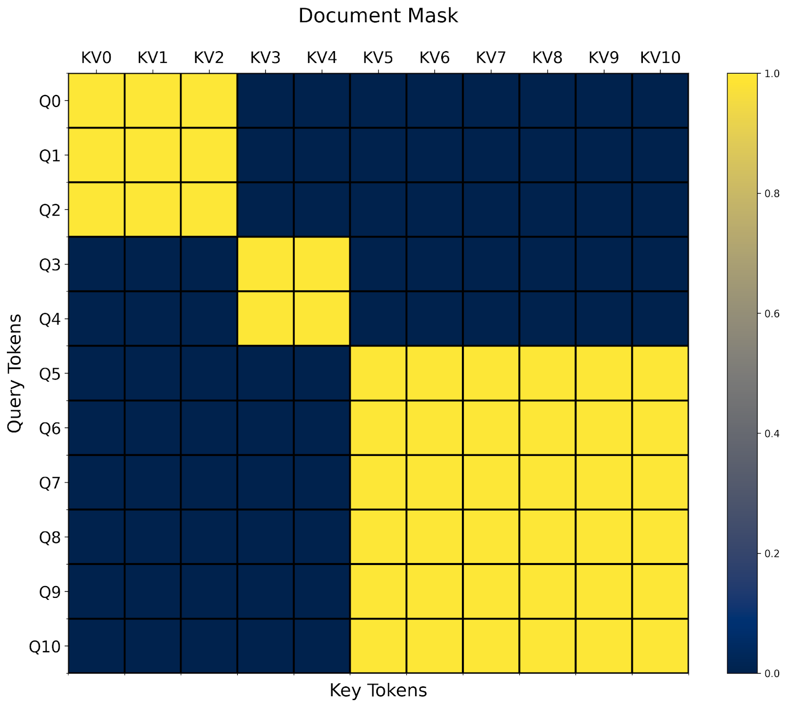
One interesting aspect about document masking is that it’s easy to
see how it might combine with an arbitrary combination of other masks .
For example, we already defined prefixlm_mask in the
previous section. Do we now need to define
a prefixlm_document_mask function as well?
In these cases, one pattern we’ve found quite useful is what we call
a “higher level modification”. In this case, we can take an
existing mask_mod and automatically transform it into one
that works with jagged sequences!
def generate_doc_mask_mod(mask_mod, document_id):
# Get unique document IDs and their counts
_, counts = torch.unique_consecutive(document_id, return_counts=True)
# Create cumulative counts (offsets)
offsets = torch.cat([torch.tensor([0], device=document_id.device), counts.cumsum(0)[:-1]])
def doc_mask_wrapper(b, h, q_idx, kv_idx):
same_doc = document_id[q_idx] == document_id[kv_idx]
q_logical = q_idx - offsets[document_id[q_idx]]
kv_logical = kv_idx - offsets[document_id[kv_idx]]
inner_mask = mask_mod(b, h, q_logical, kv_logical)
return same_doc & inner_mask
return doc_mask_wrapperFor example, given the prefix_lm_causal mask from above,
we can transform it into one that works on on packed documents like
so:
prefix_length = torch.tensor(2, dtype=torch.int32, device="cuda")
def prefix_mask(b, h, q_idx, kv_idx):
return kv_idx < prefix_length
prefix_lm_causal = or_masks(prefix_mask, causal_mask)
doc_prefix_lm_causal_mask = generate_doc_mask_mod(prefix_lm_causal, document_id)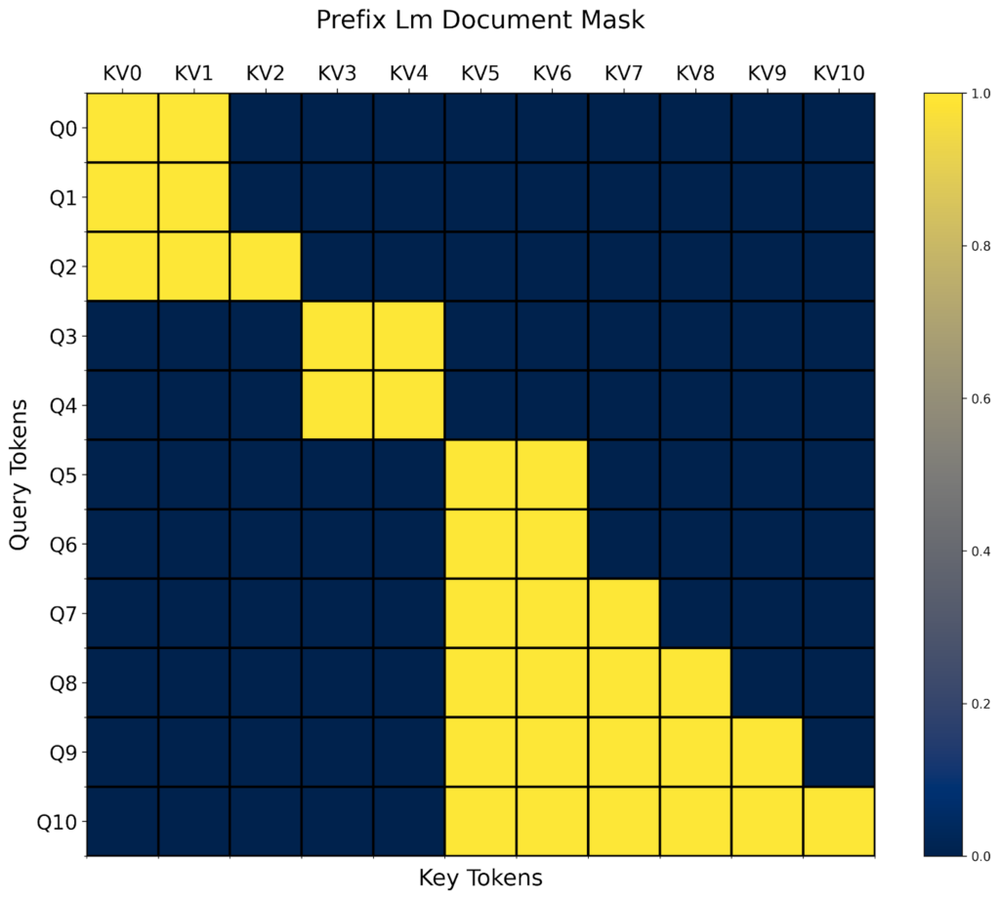
Now, this mask is “block-prefixLM-diagonal” shaped. 🙂
That’s all of our examples! There are far more attention variants than we have space to list, so check out Attention Gym for more examples. We hope that the community will contribute some of their favorite applications of FlexAttention as well.
FAQ
Q: When does FlexAttention need to recompile?
As FlexAttention leverages torch.compile for graph
capture, it can actually avoid recompilation in a broad spectrum of
cases. Notably, it does not need to recompile even if captured
tensors change values!
flex_attention = torch.compile(flex_attention)
def create_bias_mod(bias)
def bias_mod(score, b, h, q_idx, kv_idx):
return score + bias
return bias_mod
bias_mod1 = create_bias_mod(torch.tensor(0))
flex_attention(..., score_mod=bias_mod1) # Compiles the kernel here
bias_mod2 = create_bias_mod(torch.tensor(2))
flex_attention(..., score_mod=bias_mod2) # Doesn't need to recompile! Even changing the block-sparsity doesn’t require a recompile. However, if the block-sparsity changes, we do need to recompute the BlockMask.
Q: When should we recompute the BlockMask?
We need to recompute the BlockMask whenever the block-sparsity changes. Although computing the BlockMask is much cheaper than recompilation (on the order of hundreds of microseconds as opposed to seconds), you should still take care to not excessively recompute the BlockMask.
Here are some common patterns and some recommendations on how you might approach them.
Mask never changes (e.g. causal mask)
In this case, you can simply precompute the block mask and cache it
globally, reusing it for all attention calls.
block_mask = create_block_mask(causal_mask, 1, 1, S,S)
causal_attention = functools.partial(flex_attention, block_mask=block_mask)Mask changes every batch (e.g. document
masking)
In this case, we would suggest computing the BlockMask at the beginning
of the model and threading it through the model – reusing the BlockMask
for all layers.
def forward(self, x, doc_mask):
# Compute block mask at beginning of forwards
block_mask = create_block_mask(doc_mask, None, None, S, S)
x = self.layer1(x, block_mask)
x = self.layer2(x, block_mask)
...
# amortize block mask construction cost across all layers
x = self.layer3(x, block_mask)
return xMask changes every layer (e.g. data-dependent
sparsity)
This is the hardest setting, since we’re unable to amortize the block
mask computation across multiple FlexAttention invocations. Although
FlexAttention can certainly still benefit this case, the actual benefits
from BlockMask depend on how sparse your attention mask is and how fast
we can construct the BlockMask. That leads us to…
Q: How can we compute BlockMask quicker?
create_block_mask is unfortunately fairly expensive,
both from a memory and compute perspective, as determining whether a
block is completely sparse requires evaluating mask_mod at
every single point in the block. There are a couple ways to address
this:
- If your mask is the same across batch size or heads, make sure that
you’re broadcasting over those (i.e. set them
to
Noneincreate_block_mask). - Compile
create_block_mask. Unfortunately, today,torch.compiledoes not work directly oncreate_block_maskdue to some unfortunate limitations. However, you can set_compile=True, which will significantly reduce the peak memory and runtime (often an order of magnitude in our testing). - Write a custom constructor for BlockMask. The metadata for BlockMask
is quite simple (see the documentation).
It’s essentially two tensors. a.
num_blocks: The number of KV blocks computed for each query block.
b.indices: The positions of the KV blocks computed for each query block.For example, here’s a custom BlockMask constructor forcausal_mask.
def create_causal_mask(S):
BLOCK_SIZE = 128
# The first query block computes one block, the second query block computes 2 blocks, etc.
num_blocks = torch.arange(S // BLOCK_SIZE, device="cuda") + 1
# Since we're always computing from the left to the right,
# we can use the indices [0, 1, 2, ...] for every query block.
indices = torch.arange(S // BLOCK_SIZE, device="cuda").expand(
S // BLOCK_SIZE, S // BLOCK_SIZE
)
num_blocks = num_blocks[None, None, :]
indices = indices[None, None, :]
return BlockMask(num_blocks, indices, BLOCK_SIZE=BLOCK_SIZE, mask_mod=causal_mask)Q:
Why are score_mod and mask_mod different?
Isn’t mask_mod just a special case
of score_mod?
Very astute question, hypothetical audience member! In fact,
any mask_mod can be easily converted to
a score_mod (we do not recommend using this function in
practice!)
def mask_mod_as_score_mod(b, h, q_idx, kv_idx):
return torch.where(mask_mod(b, h, q_idx, kv_idx), score, -float("inf"))So, if score_mod can implement
everything mask_mod can, what’s the point of
having mask_mod?
One immediate challenge: a score_mod requires the
actual score value as an input, but when we’re precomputing
the BlockMask, we don’t have the actual score value. We can
perhaps fake the values by passing in all zeros, and if
the score_mod returns -inf, then we consider
it to be masked (in fact, we originally did this!).
However, there are two issues. The first is that this is hacky – what
if the user’s score_mod returned -inf when the
input is 0? Or what if the user’s score_mod masked out with
a large negative value instead of -inf? It seems we’re
trying to cram a round peg into a square hole. However, there’s a more
important reason to separate
out mask_mod from score_mod – it’s
fundamentally more efficient!.
As it turns out, applying masking to every single computed element is actually quite expensive – our benchmarks see about a 15-20% degradation in performance! So, although we can get significant speedups by skipping half the computation, we lose a meaningful part of that speedup from needing to mask out every element!
Luckily, if we visualize the causal mask, we notice that the vast majority of blocks do not require a “causal mask” at all – they’re fully computed! It is only the blocks on the diagonal, partially computed and partially masked, that require masking to be applied.
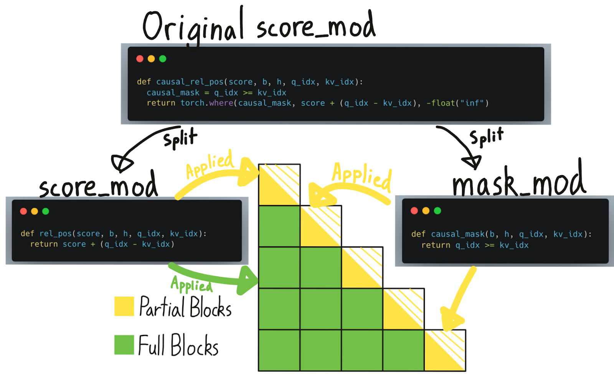
The BlockMask previously told us which blocks we need to compute and
which blocks we can skip. Now, we further augment this data structure to
also tell us which blocks are “fully computed” (i.e. masking can be
skipped) vs. “partially computed” (i.e. a mask needs to be applied).
Note, however, that although masks can be skipped on “fully computed”
blocks, other score_mods like relative positional
embeddings still need to be applied.
Given just a score_mod, there’s no sound way for us to
tell which parts of it are “masking”. Hence, the user must separate
these out themselves into mask_mod.
Q: How much additional memory does the BlockMask need?
The BlockMask metadata is of
size [BATCH_SIZE, NUM_HEADS, QUERY_LEN//BLOCK_SIZE, KV_LEN//BLOCK_SIZE]. If
the mask is the same across the batch or heads dimension it can be
broadcasted over that dimension to save memory.
At the default BLOCK_SIZE of 128, we expect that the
memory usage will be fairly negligible for most use cases. For example,
for a sequence length of 1 million, the BlockMask would only use 60MB of
additional memory. If this is a problem, you can increase the block
size: create_block_mask(..., BLOCK_SIZE=1024). For example,
increasing BLOCK_SIZE to 1024 would result in this metadata
dropping to under a megabyte.
Q: How do the numerics compare?
Although the results are not bitwise identical, we are confident that FlexAttention is as numerically accurate as FlashAttention. We generate the following distribution of differences comparing FlashAttention versus FlexAttention over a large range of inputs on both causal and non causal attention variants. The errors are nearly identical.
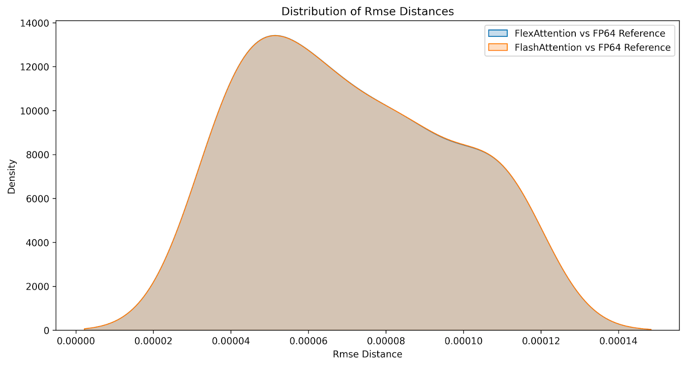
Performance
Generally speaking, FlexAttention is nearly as performant as a handwritten Triton kernel, which is unsurprising, as we heavily leverage a handwritten Triton kernel. However, due to its generality, we do incur a small performance penalty. For example, we must incur some additional latency to determine which block to compute next. In some cases, we provide some kernel options that can affect the performance of the kernel while changing its behavior. They can be found here: performance knobs
As a case study, let’s explore how the knobs affect the performance of causal attention. We will compare performance of the triton kernel versus FlashAttentionv2 on A100. The script can be found here.
FlexAttention achieves 90% of FlashAttention2’s performance in the forward pass and 85% in the backward pass. FlexAttention is currently utilizing a deterministic algorithm that recomputes more intermediates than FAv2, but we have plans to improve FlexAttention’s backward algorithm and hope to close this gap!
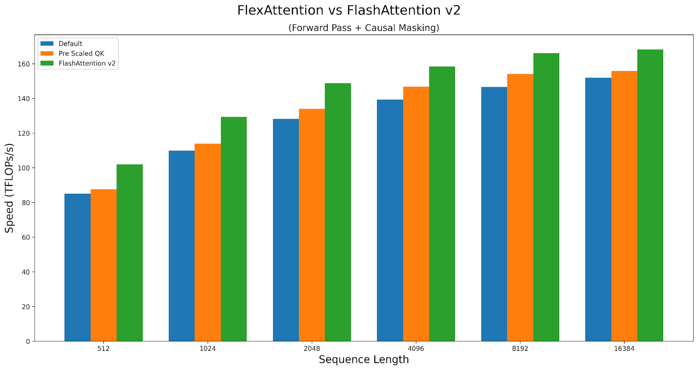
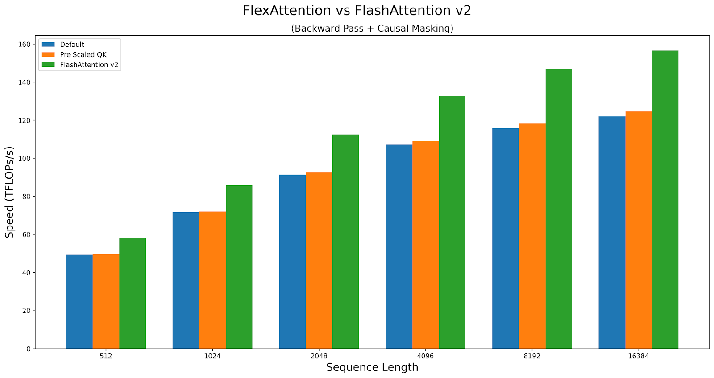
Conclusion
We hope you have as much fun using FlexAttention as we did developing it! While working on this, we ended up finding way more applications of this API than we could have expected. We’ve already seen it accelerate torchtune’s sample packing throughput by 71%, replace the need for a researcher to spend over a week writing their own custom Triton kernel, and deliver competitive performance with custom handwritten attention variants.
One final thing that made implementing FlexAttention quite fun is that we were able to leverage a lot of existing PyTorch infra in an interesting way. For example, one of the unique aspects about TorchDynamo (torch.compile’s frontend) is that it does not require tensors used in the compiled function to be explicitly passed in as inputs. This allows us to compile mods like document masking, which require accessing global variables where the global variables need to change!
bias = torch.randn(1024, 1024)
def score_mod(score, b, h, q_idx, kv_idx):
return score + bias[q_idx][kv_idx] # The bias tensor can change!Furthermore, the fact that torch.compile is a generic
graph-capture mechanism also allows it to support more “advanced”
transformations, such as the higher order transform that transforms
any mask_mod into one that works with jagged tensors.
We also leverage TorchInductor (torch.compile’s backend) infrastructure for Triton templates. Not only did this make it easy to support codegening FlexAttention – it also automatically gave us support for dynamic shapes as well as epilogue fusion (i.e. fusing an operator onto the end of attention)! In the future, we plan on extending this support to allow for quantized versions of attention or things like RadixAttention as well.
In addition, we also leveraged higher order ops, PyTorch’s autograd
to automatically generate the backwards pass, as well as vmap to
automatically apply score_mod for creating the
BlockMask.
And, of course, this project wouldn’t have been possible without Triton and TorchInductor’s ability to generate Triton code.
We look forward to leveraging the approach we used here to more applications in the future!
Limitations and Future Work
- FlexAttention is currently available in PyTorch nightly releases, we plan to release it as a prototype feature in 2.5.0
- We did not cover how to use FlexAttention for inference here (or how to implement PagedAttention) – we will cover those in a later post.
- We are working to improve the performance of FlexAttention to match FlashAttention3 on H100 GPUs.
- FlexAttention requires that all sequence lengths be a multiple of 128 – this will be addressed soon.
- We plan on adding GQA support soon – for now, you can just replicate the kv heads.
Acknowledgements
We want to highlight some prior work (and people) that have inspired FlexAttention.
- Tri Dao’s work on FlashAttention
- Francisco Massa and the Xformers team for BlockSparseAttention in Triton
- The Jax team’s work on SplashAttention
- Philippe Tillet and Keren Zhou for helping us with Triton
- Ali Hassani for discussions on neighborhood attention
- Everybody who’s complained about attention kernels not supporting their favorite attention variant 🙂